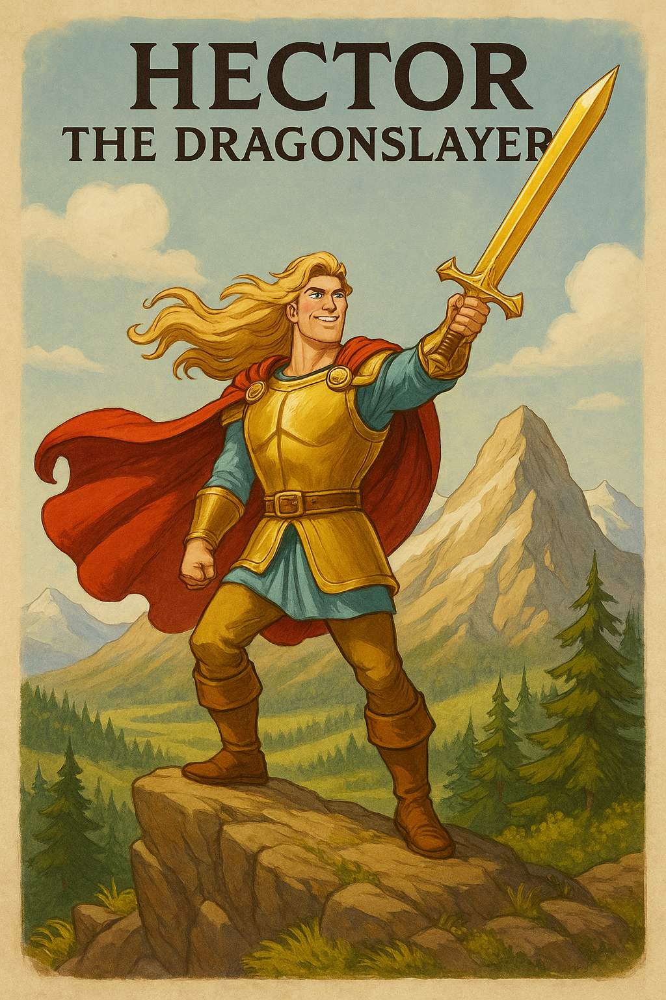

Presented by


Prince Hector the Mighty! A legend! A flame!
The dragon-slayer kingmakers shouted his name.
He'd tamed molten caves and brought beasts to their knees,
With a sword that could slice through the thickest of trees.
No monster had bested his shining gold blade—
His cape caught the wind like a crimson cascade.

This time, the quest was the fiercest of all:
A dragon of dragons—immense, ancient, tall.
She perched on a mountain no man dared ascend,
They whispered her name like the world’s final end.
He polished his armor, enchanted and bright,
Then charged through the woods like a comet of might.

His stallion breathed fire (they were both pretty mad),
The forest birds panicked, the squirrels all went bad.
The trees bowed in fear as he thundered on through,
With a sword blessed by wizards and dipped in sky-blue.
His war cry was wild, his mission was clear—
The mountain itself seemed to shiver in fear.

He reached the great lair with a thundering stomp...
And stopped when he saw… a small garden and lamp?
A hammock swung slow in the soft mountain breeze,
And incense was wafting through lavender trees.
There sat the great dragon—her scales tinged with gray.
She sipped from a coconut. “Hi, child. Nice day?”

He drew out his blade, glowing hot in the sun.
She nodded. “Oh neat. Is that magical, hon?”
He lunged with a roar—but she floated away,
To water her marigolds, smiling, “Okay.”
“I don’t do the fight thing,” she said with a shrug.
“Have some papaya. Or maybe a hug?”
He swung, he jabbed, he spun with a roar,
But she dodged him by slowly shuffling the floor.
He crashed through her garden and scorched all her tea,
She just lit some sage and said, “Let it be.”
She offered a beanbag and set out some flan.
“Don’t burn yourself out, little cinnamon man.”

He yelled, “Face me proper! Quit dancing around!”
She said, “I’m just lookin’ for mushrooms I found.”
He screamed at the sky, his whole body steamed—
“This is not how a dragon should act or be dreamed!”
She hummed as she sprinkled herbs into a stew—
With three little birds softly singing in view.
His blade wouldn’t cut her. His rage wouldn’t land.
She offered him lotion and held out her hand.
“No hate in this home. Just hammocks and peace.
No roars, no revenge, and no dragon-police.”
He dropped to his knees with a dramatic cry—
“Why won’t you just fight me?” She blinked. “Oh my.”

She brought him a blanket and tucked in his feet,
Then gave him a snack and a dragonfruit treat.
He twitched with confusion, unsure what to do…
His muscles still flexed, but his soul kind of knew.
This dragon was different. No battles. No fame.
Just warmth, herbal tea, and a long dragon name.

She packed him a bundle with homemade granola,
Some peppermint balm and a gift from her soula,
A thermos of soup, a soft dragon plush,
A hug with her tail and a pat with a whoosh.
She tied it all up with a shimmering thread—
Then gently bonked horns with the top of his head.
He blinked at the bundle, and his horse gave a bleat...
Thus, Hector the Dragonslayer met his defeat.